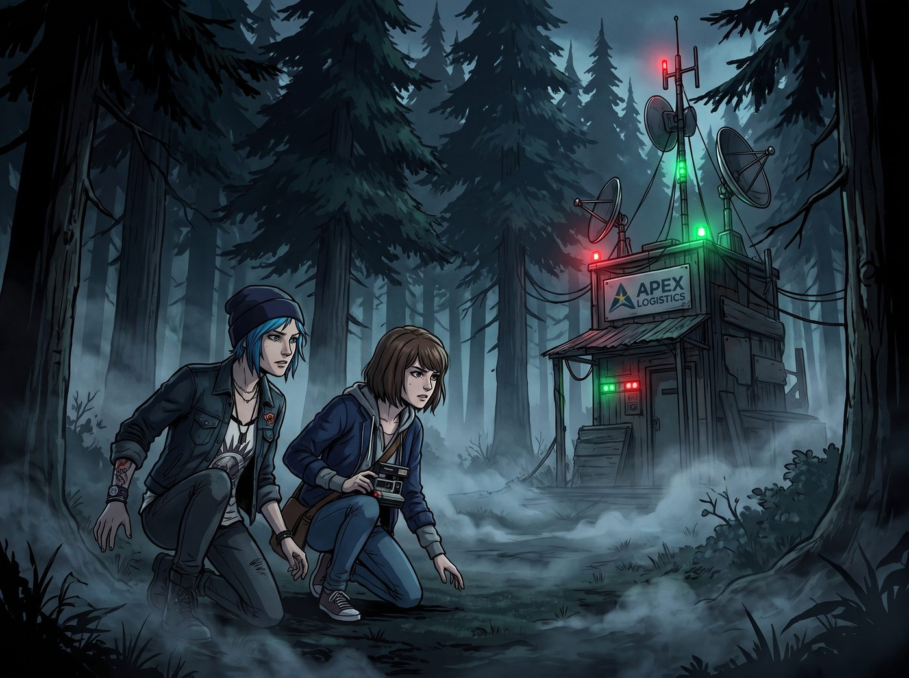
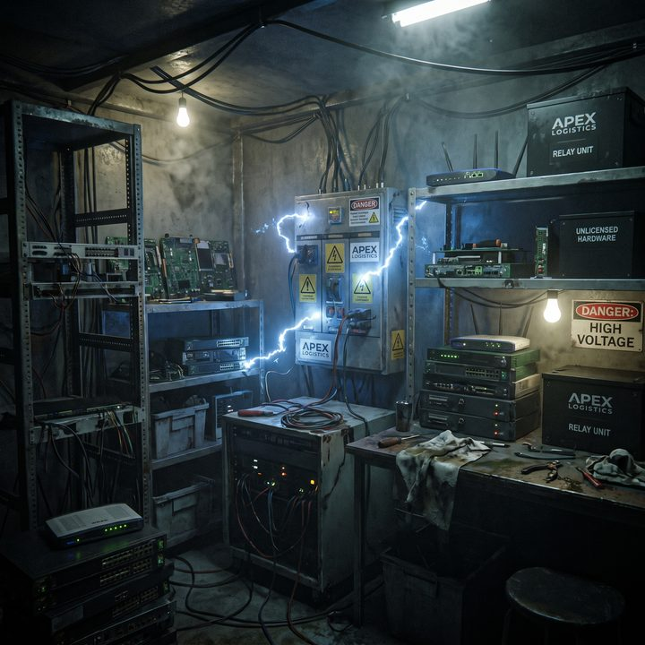

午夜合規審計


夜色如墨，奧林匹亞半島的森林裡瀰漫著濕冷的水汽。Chloe 和 Max 貓著腰，藉著樹影的掩護，一步步逼近 Apex 物流那個違法搭建的訊號中繼站。
一、實體鎖的藝術
營地外圍拉著簡陋的鐵絲網，遠處那兩台四足機器狗正沿著固定路線緩慢巡邏，紅色的感測器指示燈在黑暗中格外顯眼。
「按照 Lily 的說法，牠們的巡邏間隔是四分鐘。」Chloe 壓低聲音，透過夜視鏡觀察著機器狗的動向，「我需要九十秒搞定配電箱的鎖。Max，妳負責幫我看著左邊的死角。」
「收到。」Max 的心跳因為緊張而加速，但握著相機的手異常穩定。這種潛行的刺激感，讓她想起了無數個在阿卡迪亞灣夜探的夜晚。
二、名媛的八卦時間與衛星驚魂
而在二號車廂內部，卻是一派截然不同的溫馨與奢華。
Victoria 穿著酒紅色的真絲睡袍，手裡端著一杯紅酒，踩著優雅的貓步，溜達到了 Lily 的工作台前。沒有了那兩個吵鬧的傢伙，車廂裡安靜極了。對於名媛來說，現在是享受高品質八卦和看實境秀的最佳時機。
「我們的那兩隻大頭蝦現在進度如何了？」Victoria 抿了一口紅酒，饒有興致地看著 Lily 面前那一排巨大的曲面螢幕，「她們的迷彩服有沒有被樹枝刮破？或者 Chloe 已經被機器狗追得爬上了樹？快給我看看畫面，我需要一點睡前娛樂。」
Lily 正端坐在螢幕前，左手端著一杯熱牛奶，右手在軌跡球上輕輕滑動。螢幕正中央，是一幅極度清晰、帶有多光譜疊加的俯視熱成像畫面。畫面中，兩個橘紅色的人形輪廓正以一種極度滑稽的、半蹲的姿勢，在一堆代表樹木的冷色調陰影中緩慢挪動。
「進展還算順利，Victoria 學姐。」Lily 軟糯的聲音在安靜的車廂裡響起，「她們距離 Apex 物流的邊界還有三百碼。雖然 Chloe 學姐的心率目前高達一百二十五，且步伐產生了無效的物理震動，但在我提供的實時盲區導航下，她們完美避開了機器狗的兩次巡邏路線。」
Victoria 湊近了螢幕，看著那清晰得連地上落葉形狀都能分辨的畫面，忍不住發出了一聲讚嘆。「不得不說，Lily，妳那架懸停在森林上空的無人機鏡頭真是太棒了。這解析度，這熱成像的精準度，簡直比我們家族私人安保團隊用的設備還要好。等任務結束，給我訂十台同款，我要裝在我別墅周圍。」
Lily 敲擊鍵盤的手指微微停頓了一下。她轉過頭，大眼睛裡閃過一絲單純的疑惑，彷彿 Victoria 剛才問了一個非常外行的問題。
「Victoria 學姐，為了防止 Apex 物流的射頻感測器捕捉到異常信號，我的人造無人機機隊目前全部處於靜默待機狀態，並未升空。」
Victoria 愣住了，手裡的紅酒杯停在半空中。「沒升空？那……現在這個上帝視角的實時高清熱成像畫面，是從哪裡來的？」
「這是一顆隸屬於國家海洋和大氣管理局的民用氣象觀測衛星。」Lily 輕描淡寫地回答，彷彿在說她剛才借用了鄰居家的微波爐，「它目前正以近地軌道懸停在華盛頓州上空，同時負責即時氣象數據採集。」
車廂裡的空氣，在這一瞬間凝固了。
Victoria 呆呆地看著螢幕左上角那一排正在瘋狂跳動的加密連線代碼，感覺自己的血液正在一寸寸地結冰。「妳……妳擅自調用了聯邦的氣象衛星？用來給 Chloe Price 照路？！」名媛的聲音因為極度緊張而變成了尖銳的氣音。
「準確地說，這不叫調用，這叫閒置算力的環保型租借。」Lily 推了推反光的圓框眼鏡，語氣溫柔地開始了她的法理詠唱：「我只是向他們的底層氣象API，發布了一個虛擬的極端局部雷暴雲團觀測請求，順便讓衛星的鏡頭朝著這片森林偏轉了零點零零五度，並把光學解析度開到了最大。」
Lily 甚至還有些驕傲地笑了笑：「完全是走正規申請管道的合規操作，是一次非常優雅的軌道資源再分配呢。學姐，您要親自操作一下變焦功能嗎？」
「不！！！別碰我！！！」
Victoria 尖叫了一聲，彷彿那顆軌跡球上沾滿了炭疽病毒。身為一個在資本世界裡長大的老錢階級，Victoria 可以容忍偷稅漏稅，可以容忍合規敲詐，但一聽到「聯邦」「衛星」「未經授權」這幾個關鍵字組合在一起，她的階級本能就會瞬間拉響最高級別的警報——這聽起來就像是會讓整個 Chase 財團被聯邦政府盯上的麻煩事。
「我什麼都沒看到！我剛才一直在做深度睡眠的水療！我甚至不知道什麼是衛星！」Victoria 語無倫次地瘋狂撇清關係，她端著紅酒杯，踩著絲絨拖鞋，以一種完全不符合名媛形象的滑稽姿態，連連後退。
「學姐，這場實境秀的收視率才剛剛開始，您不繼續看她們怎麼對付機器狗了嗎？」Lily 眨了眨無辜的大眼睛，試圖挽留她唯一的觀眾。
「看妳個頭！我要回房間了！」Victoria 猛地轉過身，像一隻被獵豹追趕的羚羊一樣，以百米衝刺的速度逃離了工作區，一把撞開自己臥室的門，「砰」的一聲反鎖了起來。
看著落荒而逃的 Victoria，Lily 遺憾地嘆了口氣。「資本家的心理承受能力，果然還是太脆弱了。」實習生搖了搖頭，端起熱牛奶喝了一口，然後重新將目光投向那片衛星畫面，按下了通訊頻道的按鈕。
「Chloe 學姐，Max 學姐，請注意。」Lily 軟糯的聲音透過耳機傳入森林，「三點鐘方向有一隻機器狗正在靠近。不用擔心，我已經用來自外太空的溫柔目光鎖定它了。請繼續前進。」
三、大天使的溫柔接手與三個代號
伴隨著 Victoria 臥室門砰的一聲上鎖，二號車廂的工作區安靜了下來。
不到半分鐘，一陣輕柔的腳步聲從廚房的方向傳來。小天使 Kate 端著兩杯冒著熱氣的洋甘菊茶，有些擔憂地走到了 Lily 的工作台旁。她沒有 Victoria 那種看好戲的八卦心態，那雙溫柔的眼睛裡，只有對朋友們在深夜森林裡挨凍的純粹擔憂。
「Lily……她們還好嗎？」Kate 將熱茶輕輕放在桌上，看著螢幕上那些複雜的熱成像輪廓，「外面下著雨，還那麼黑。那些金屬做的機器小狗會不會不小心弄傷她們？」
面對 Kate，實習生眼底那種看著資本家崩潰的惡趣味瞬間收斂了。Lily 乖巧地接過茶杯，手指在鍵盤上輕輕敲擊了幾下。
「請放心，Kate 學姐。她們的生命跡象非常平穩，心率與血氧飽和度都在健康區間。」Lily 軟糯的聲音像是一劑鎮定劑，「為了減少通訊頻率被截獲的風險，我們事先制定了一套非常簡短的階段性代碼。她們每突破一個安保節點，就會回報一個代號。」
話音剛落，桌上的戰術通訊器裡傳來了兩聲麥克風的輕敲聲，隨後是 Chloe 壓低了的、帶著雨水喘息的聲音：
「Lily，我們到了。Pass Prescott，通過普雷斯科特。」
Kate 眨了眨眼睛，有些疑惑：「普雷斯科特？那不是以前在阿卡迪亞灣那個很有錢、但脾氣不太好的同學的姓氏嗎？」
「是的，Kate 學姐。這正是 Chloe 學姐親自命名的。」Lily 推了推圓框眼鏡，用一種給小學生講睡前故事的溫柔語氣，將冰冷的戰術情報翻譯出來：「代表的是敵方營地最外圍的紅外線雷射絆線與微波震動感測網。因為這套安保系統極度昂貴、囂張、且總是在擋別人的路，所以被命名為這個代號。她們剛才已經成功從雷射網的盲區鑽過去了。」
Kate 恍然大悟地點點頭，雙手合十：「原來如此。能把阻礙想像成以前認識的人，Chloe 真的很懂得苦中作樂呢。感謝主讓她們平安通過了第一關。」
兩分鐘後，通訊器裡傳來了 Max 有些緊張的氣音：
「Lily，這裡好黑。Pass Jefferson，通過傑佛遜。」
聽到這個名字，Kate 的肩膀微微瑟縮了一下，那是她們在 Blackwell 學院時共同的夢魘。
Lily 敏銳地察覺到了 Kate 的不安，立刻伸出空閒的左手，輕輕覆蓋在 Kate 微微發抖的手背上以示安撫。「不要怕，Kate 學姐。在這裡，這個代號代表的是兩台機器狗巡邏路線交叉時，產生的一個只有十五秒空檔的絕對視覺盲區。」
Lily 看著衛星熱成像畫面上，兩個橘紅色的人影完美地卡在兩隻機械狗視線死角的瞬間，嘴角勾起一抹讚賞的微笑。「這是一個極度危險、充滿壓迫感且絕對不能被光線照到的區域。Max 學姐的形容非常精準。而現在，她們已經安全穿過了這片黑暗。」
Kate 深吸了一口氣，眼神重新變得堅定：「Max 和 Chloe 已經比以前更勇敢了。她們一定沒問題的。」
又過了令人窒息的五分鐘。螢幕上的兩個橘色人影終於抵達了目標建築物的邊緣。那是 Apex 物流的非法主機板與配電箱所在地。
通訊器裡傳來了一聲極其輕微的金屬鎖扣彈開的咔噠聲。那是 Chloe 街頭開鎖技術的勝利。
「Bingo。Pass Two Whales，通過雙鯨魚餐廳。」Chloe 的聲音裡透著壓抑不住的興奮，「USB嗅探器已經插入。Max，看妳的了。」
「咔嚓——嗡——」一聲清晰的寶麗來相機快門聲，伴隨著底片吐出的機械聲，透過通訊器傳回了車廂。這意味著不可篡改的實體物理證據已經到手。
「雙鯨魚餐廳？」Kate 聽到這個充滿回憶的名字，嘴角終於露出了安心的微笑。
「是的，Kate 學姐。那代表著擁有強大電流、充滿了油脂味與金屬碰撞聲的核心供電樞紐。」Lily 雙手在鍵盤上化作一團殘影，螢幕上瞬間彈出了數十個綠色的進度條。那根插在主機板上的USB嗅探器，正在瘋狂地將 Apex 物流的無人機控制權轉移到二號車廂的伺服器裡。
「接管完成。」Lily 輕輕敲下最後一個回車鍵，抬起頭，大眼睛裡閃爍著任務成功的愉悅：「她們做到了。現在，那家公司的無人機機隊，已經在法理與物理上，完全成為了我們的被動資產。」
Kate 看著螢幕上那些代表安全的綠色指示燈，長長地舒了一口氣。
「太好了。」小天使溫柔地將手疊放在胸前，「Chloe 和 Max 就像是在深夜裡遞送正義信件的郵差。她們用勇敢的腳步，幫助了森林裡無辜的樹木，還把那些偷來的電力還給了大家。她們回來之後，我一定要給她們做最大份的蔓越莓鬆餅來犒賞這份愛心。」
聽著 Kate 將一場軍民兩用衛星輔助的重度商業間諜與駭客滲透行動，完美地解讀為深夜郵差遞送正義信件的愛心之旅，Lily 乖巧地拿起桌上的洋甘菊茶，滿足地喝了一大口。
「這是一份非常合理的績效獎勵，Kate 學姐。」實習生笑著說道。
這時，通訊器裡傳來了 Chloe 得意洋洋的聲音：「呼叫基地。任務完成。現在，Lily，妳這個吸血鬼，馬上把我的遊戲帳號解鎖！不然老娘就帶著這張底片在森林裡跟野熊過夜了！」
「數據抓取完畢，證據鏈完整，任務成功。兩位學姐，可以準備撤退了。」Lily 的聲音再次響起。
聽到這句話，Chloe 和 Max 相視一笑，緊繃的神經終於稍微鬆懈了一些。她們完全沒有想到，接下來的撤離過程，會遠比潛入時驚險。